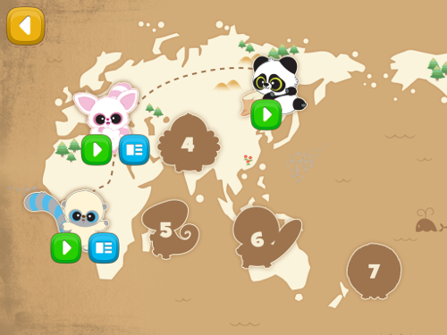

I am huge fan of games. Some of the best stories ever told have been in games, whether it's the story the game tells or moments you share with friends. Creating these stories and experences is what I want to do as a game developer. I spend most my free time coming up with video game concepts and prototyping them for people to try out. I have a few games I've been working on and every game has been a great learning experence. I also thoroughly enjoy tabletop games and running them. I have been running various RPGs, building narratives and creating worlds for 4 years now including D&D, Savage Worlds and Exalted. Players will agree that the highlights of my games is the pacing and the interesting character voices I create to give the NPCs personalities. My overall goal when running a tabletop game is to make sure that everyone is enjoying themselves and are engaged. Last year, I started a board game collection that I play often with friends and family. A few of my favorite games to play are Betrayal at house on the hill (so much replayablity), Fortune and Glory (india jones the board game...I do voices) and Ticket to ride (due to how invested new players get when someone blocks them). Other things I enjoy are the outdoors (walks/hikes), traveling to different countries and cats.
Future Goal: learn japanese, go back to Japan (once first goal is accomplished), finish the D&D adventure "Rise of Tiamat" (I have yet to roleplay a dragon), get married to my fiancée, buy a house where I put up a really ugly ceiling fan (one of those weird from Home Hardware) and get this job interview (yes I broke the 4th wall)
 |
Original Happy Studio: Home LayerThis is Happy Studio Home section which would show the featured programs. Happy Studio would release a new digital book and a game/activity every month and would show it here first. My big contribution to this page was integrating the animated Happy with the maracas from our art team. I also created the featured app shown in this picture: an interactive Monster High and Ben 10 sticker book. |
|---|---|
 |
Original Happy Studio: Game LayerThis is the Happy Studio Game section. I integrated the Happy with a hula hoop (he animates and cycles through a few possible animations). The two games I was a part of in this picture was the Furby gesture-based dancing game and the Batman reskin of the same game (devs referred it to "bat-rave in the bat cave") |
 |
Creativity: Hotwheels Game ModeThis was the the first game I developed at Fuel. This brand included the license from Crayola, Barbie and Hotwheels. The most innovative feature on this sticker book application was the ability for the users to take a picture of themselves and have the picture placed on a bobble head character. I developed this and it turned out really well. If you stuck a sticker to the bobblehead of yourself, the sticker would bobble along with you as you shake the screen. |
 |
Magic Camera Penguins Safe BreakI wrote this for the Happy Studio app but I also worked on a Corona copy of this project for McPlay (US version of the app written by another company). The goal in this game is to find the correct number to unlock the safe by using your gyroscope to rotate your device around and locate them in a "virtual" space around the user. |
Yoohoo and Friends Magic CameraDue to the success of Magic Camera game concept with our users I created for Fuel, it was rebranded multiple times to engage the users with a variety of licenses, this being the third iteration. For this game in particular I was the lead developer. |
|
|  |
Yoohoo and Friends Part 2This is the Level Selection Map. Every time you complete a level, it shows a trail animation that leads to the next unlocked level. This took lots of communication with the animator and tweaking to get the visuals just right. |
 |
Yoohoo and Friends Part 3All Magic Camera games used the phone's gyroscope and accelerometer to navigate the user in 3D space. Magic Camera games create an immersive experience by combining those device capabilities with the phone's camera. My job was writing the library for both Android and iOS in order to use this functionality. I also wrote a good chunk of the original Magic Camera gameplay code. Overall, this was the most successful game Happy Studio ever produced being nominated for tech awards./p> |
 |
Super Mario Quest for Happiness: Title ScreenThis was the second game I had worked on for Fuel. It was a 5 level platformer where the goal was to avoid the enemies, collect the stars and make it to exit. The dev cycle was limited to just a month and a half. |
 |
Super Mario Quest for Happiness: GameplayWorked on animation integration and platforming physics |
 |
PhotoboothAnother app that saw a lot of rebranding with various licenses. This title screen was dynamic and would change what assets are displayed via a JSON file depending on the license. The successor to the original Hotwheel sticker book application. |
 |
PhotoboothMe playing with Photobooth |
 |
Spiderman - Web SlingerI created this screen. Its based off of Fuel's layout exporter but it was really buggy so I had to do alot of tweaking to make this look like the compositions the design team handed off to us. |
 |
Spiderman - Web SlingerWorked on core gameplay and added all the animation to this game...there was lot of back and forth because the animation files were way too big for mobile which caused the game to slow down everytime there was a lightning strike from the top of the screen. |
Operation BlinkOperation Blink was a tactics adventure game that I worked on for 4 months. I wanted to create a crossover of Fire Emblem and Pokémon. It was originally a school project but I ended up coding 80% of it and doing all the art work. The level design was done by another student. Overall, with a two man team, we ended up with a pretty good prototype. |
|---|